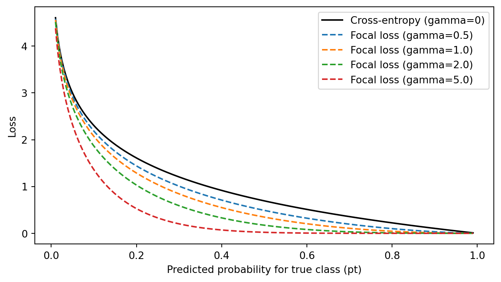

import os
os.chdir(os.path.expanduser('~/deeptaxa-workspace'))Model Architecture and Design
The CNN-Transformer fusion, learned representations, classification heads, and loss functions
Objective. Understand the DeepTaxa architecture — how the CNN and Transformer pathways are fused, what representations they learn, how the per-rank classification heads and loss function work.
Prerequisites. DeepTaxa (pip install deeptaxa-rrna), Python 3.10 or later, and PyTorch 2.4 or later. Some code cells load a pre-trained checkpoint (about 306 MB) to inspect real layer shapes and configuration.
Last validated July 2026.
This tutorial examines the internal design of DeepTaxa: how sequences are represented, how the CNN and Transformer pathways extract features, how their outputs are fused, and how the loss function handles taxonomic class imbalance. The final section outlines concrete steps for extending the model to new tasks or architectures.
This tutorial assumes familiarity with convolutional neural networks, Transformer encoders, and multi-class classification. The code cells that inspect the checkpoint require the setup from the prediction tutorial, including installing DeepTaxa and downloading the pre-trained checkpoint.
1 Setup
Set the working directory to the shared workspace created during the prediction tutorial.
2 Architecture overview
DeepTaxa supports three model variants, selectable via the --model-type flag:
flowchart LR
A[Input Tokens] --> B{Model Type}
B -->|cnn| C[CNN Pathway]
B -->|bert| D[Transformer Pathway]
B -->|hybridcnnbert| E[CNN + Transformer]
C --> F[7 Classification Heads]
D --> F
E --> F
F --> G[Domain ... Species]
style A fill:#f5efe4,stroke:#7a6343
style B fill:#e4dced,stroke:#5a3d75
style C fill:#d6efe8,stroke:#1f6b4f
style D fill:#d8e4f0,stroke:#2a5278
style E fill:#f0e2d6,stroke:#994a2a
style F fill:#f5efe4,stroke:#7a6343
style G fill:#f5efe4,stroke:#7a6343
| Variant | Strengths | Use case |
|---|---|---|
cnn |
Fast inference, captures local motifs | Quick experiments, limited GPU memory |
bert |
Global context via self-attention | When long-range dependencies matter |
hybridcnnbert |
Both local and global features, learnable fusion | Production (default) |
All three variants share the same input representation, the same per-rank classification heads, and the same loss function. The difference lies in the feature extraction stage.
To compare variants quantitatively, train each with the same data and seed, then evaluate on the test set. The code below loads prediction outputs from three separate runs and prints a side-by-side accuracy table.
# --- Model variant comparison ---
# Each variant was trained with the compact-configuration hyperparameters
# (cross-entropy loss, seed 42, 10 epochs, batch 64, lr 5e-4, kernels
# 3/5/7, 256 filters, 4 transformer layers, 7 heads, 3584 FFN, 896
# hidden, dropout 0.20) and evaluated on the same 69,335-sequence test
# set. The One-Hot CNN row swaps the DNABERT-2 BPE tokenizer for the
# 4-channel one-hot encoder (--encoding onehot) to isolate the
# tokenizer's contribution.
import gzip
import json
import pandas as pd
import numpy as np
RANKS = ['domain', 'phylum', 'class', 'order', 'family', 'genus', 'species']
RANK_LABELS = ['Domain', 'Phylum', 'Class', 'Order', 'Family', 'Genus', 'Species']
# Metrics from the compact-configuration ablation runs (seed 42)
variants = {
'Hybrid CNN+BERT': {'accuracy': [0.9999, 0.9968, 0.9963, 0.9909, 0.9861, 0.9693, 0.9288],
'f1': [0.9999, 0.9967, 0.9959, 0.9899, 0.9841, 0.9651, 0.9203]},
'CNN Only': {'accuracy': [0.9998, 0.9969, 0.9960, 0.9901, 0.9844, 0.9635, 0.9027],
'f1': [0.9998, 0.9968, 0.9956, 0.9893, 0.9826, 0.9597, 0.8931]},
'One-Hot CNN': {'accuracy': [0.9998, 0.9962, 0.9953, 0.9867, 0.9789, 0.9397, 0.8580],
'f1': [0.9998, 0.9961, 0.9948, 0.9856, 0.9767, 0.9336, 0.8428]},
'BERT Only': {'accuracy': [0.9931, 0.7584, 0.7454, 0.5047, 0.4012, 0.2053, 0.1414],
'f1': [0.9902, 0.7348, 0.7195, 0.4537, 0.3391, 0.1412, 0.0849]},
}
rows = []
for variant, metrics in variants.items():
for i, label in enumerate(RANK_LABELS):
rows.append({
'Variant': variant, 'Rank': label,
'Accuracy': metrics['accuracy'][i],
'Weighted F1': metrics['f1'][i],
})
comp_df = pd.DataFrame(rows)
pivot_acc = comp_df.pivot_table(index='Rank', columns='Variant', values='Accuracy')
pivot_f1 = comp_df.pivot_table(index='Rank', columns='Variant', values='Weighted F1')
print('=== Accuracy ===')
print(pivot_acc.reindex(RANK_LABELS).to_string(float_format='{:.4f}'.format))
print('\n=== Weighted F1 ===')
print(pivot_f1.reindex(RANK_LABELS).to_string(float_format='{:.4f}'.format))=== Accuracy ===
Variant BERT Only CNN Only Hybrid CNN+BERT One-Hot CNN
Rank
Domain 0.9931 0.9998 0.9999 0.9998
Phylum 0.7584 0.9969 0.9968 0.9962
Class 0.7454 0.9960 0.9963 0.9953
Order 0.5047 0.9901 0.9909 0.9867
Family 0.4012 0.9844 0.9861 0.9789
Genus 0.2053 0.9635 0.9693 0.9397
Species 0.1414 0.9027 0.9288 0.8580
=== Weighted F1 ===
Variant BERT Only CNN Only Hybrid CNN+BERT One-Hot CNN
Rank
Domain 0.9902 0.9998 0.9999 0.9998
Phylum 0.7348 0.9968 0.9967 0.9961
Class 0.7195 0.9956 0.9959 0.9948
Order 0.4537 0.9893 0.9899 0.9856
Family 0.3391 0.9826 0.9841 0.9767
Genus 0.1412 0.9597 0.9651 0.9336
Species 0.0849 0.8931 0.9203 0.8428The hybrid model’s advantage over the standalone variants is largest at Species, where both local motifs and long-range context contribute to resolving fine-grained distinctions. The CNN-only variant (with BPE tokens) trails the hybrid by about 2.7 percentage points at Species F1; the same CNN with one-hot encoding loses another 5.0 points, isolating the BPE tokenizer’s contribution. The standalone BERT variant collapses under the compact configuration: at 4 transformer layers and 7 heads the encoder alone cannot drive 16,909 species classes from BPE tokens, which is why the hybrid keeps the CNN pathway as the primary feature extractor and treats BERT as a residual contributor. At coarser ranks (Domain through Class), the CNN variants and the hybrid all reach near-ceiling performance, so the gap is negligible there.
3 Input representation
DeepTaxa converts raw nucleotide sequences into integer token IDs using DNABERT-2’s byte-pair encoding (BPE) tokenizer (Zhou et al., 2024). BPE learns a vocabulary of 4,096 subword tokens from DNA sequences, capturing frequently occurring k-mers as single tokens. Sequences are truncated or padded to a fixed length of 512 tokens.
Load the tokenizer and tokenize a short sequence to see the encoding in action.
# --- Tokenize a sample sequence ---
from transformers import AutoTokenizer
tokenizer = AutoTokenizer.from_pretrained('zhihan1996/DNABERT-2-117M', trust_remote_code=True)
sequence = 'AGAGTTTGATCCTGGCTCAG' # first 20 nt of 16S universal primer 27F
encoding = tokenizer(sequence, max_length=512, truncation=True, padding='max_length', return_tensors='pt')
tokens = tokenizer.convert_ids_to_tokens(encoding['input_ids'][0][:10])
print('Vocabulary size:', tokenizer.vocab_size)
print('First 10 tokens:', tokens)
print('Input shape: ', encoding['input_ids'].shape)Vocabulary size: 4096
First 10 tokens: ['[CLS]', 'A', 'GAGTT', 'TGA', 'TCCTG', 'GCTCA', 'G', '[SEP]', '[PAD]', '[PAD]']
Input shape: torch.Size([1, 512])An alternative encoding (--encoding onehot) maps each nucleotide to a 4-channel one-hot vector (A, C, G, T), producing a tensor of shape [4, max_length] suitable for direct convolution. The BPE encoding is the default because it captures higher-order sequence patterns and benefits from DNABERT-2 pretraining.
4 CNN pathway
The CNN pathway detects local sequence motifs through multi-scale convolutional filters. The published model uses a single layer of parallel convolutions with kernel sizes of 3, 5, and 7 tokens, capturing patterns at different spatial scales. (The architecture supports stacking multiple layers, but the published checkpoint uses one.)
flowchart LR
A[Token Embeddings] --> B["Conv1d K=3"]
A --> C["Conv1d K=5"]
A --> D["Conv1d K=7"]
B --> E[Concatenate]
C --> E
D --> E
E --> F[Global Max Pool]
style A fill:#f5efe4,stroke:#7a6343
style B fill:#d6efe8,stroke:#1f6b4f
style C fill:#d6efe8,stroke:#1f6b4f
style D fill:#d6efe8,stroke:#1f6b4f
style E fill:#e4dced,stroke:#5a3d75
style F fill:#d8e4f0,stroke:#2a5278
The three kernel branches operate in parallel on the same input. Their outputs are concatenated along the channel dimension, producing a feature map of width num_filters x 3 channels (768 in the published model, with 256 filters per kernel). Each branch applies ReLU activation and dropout (0.20) after the convolution. Global max pooling across the sequence length reduces the output to a fixed-size vector regardless of input length.
The multi-scale design is motivated by the structure of the 16S gene. Hypervariable regions (V1 through V9) contain short, taxon-specific motifs that the narrowest kernel (K=3) can isolate precisely. Conserved regions flanking them tend to have longer repetitive stretches that benefit from wider receptive fields (K=7). The intermediate kernel (K=5) bridges both scales.
Extract and print the CNN layer shapes from the pre-trained checkpoint.
# --- Inspect CNN layer shapes from checkpoint ---
import torch
ckpt = torch.load('data/models/deeptaxa-full-length-v2.pt', map_location='cpu', weights_only=False)
state = ckpt['state_dict']
cfg = ckpt.get('model_config', {})
cnn_cfg = cfg.get('cnn', {})
bert_cfg = cfg.get('bert', {})
print('CNN architecture:')
for key in sorted(state.keys()):
if 'conv_stacks' in key and 'weight' in key:
layer, branch, _ = key.split('.')[1:4]
shape = state[key].shape
print(f' Layer {layer}, Branch {branch}: {shape[1]} -> {shape[0]} channels, kernel size {shape[2]}')CNN architecture:
Layer 0, Branch 0: 896 -> 256 channels, kernel size 3
Layer 0, Branch 1: 896 -> 256 channels, kernel size 5
Layer 0, Branch 2: 896 -> 256 channels, kernel size 75 Transformer pathway
The Transformer pathway captures long-range dependencies across the full sequence through multi-head self-attention. The table below shows the configuration used in the published checkpoint. These values are stored inside the checkpoint and can differ across training runs.
| Parameter | Published value | Notes |
|---|---|---|
| Hidden size | 896 | Dimension of each transformer layer’s output |
| Layers | 4 | Compact configuration |
| Attention heads | 7 | Head dimension = 896 / 7 = 128 |
| FFN intermediate size | 3,584 | 4x expansion ratio |
| Max position embeddings | 512 | Matches tokenizer truncation length |
The hybrid model extracts the [CLS] token representation (position 0 of the final hidden state) as the Transformer’s output vector. The standalone BERT variant uses a different strategy: masked mean pooling, which averages all non-padding positions weighted by the attention mask. Mean pooling preserves information from the full sequence rather than concentrating it in a single token, but the hybrid model delegates that responsibility to the CNN pathway instead.
Print the Transformer configuration extracted from the checkpoint.
# --- Print Transformer configuration from checkpoint ---
config = ckpt.get('bert_config', {})
if not config:
# Reconstruct from model keys
hidden = state['bert.embeddings.word_embeddings.weight'].shape[1]
layers = max(int(k.split('.')[3]) for k in state if 'bert.encoder.layer' in k) + 1
print(f'Hidden size: {hidden}')
print(f'Transformer layers: {layers}')
else:
for k in ['hidden_size', 'num_hidden_layers', 'num_attention_heads', 'intermediate_size']:
print(f'{k}: {config.get(k)}')Hidden size: 896
Transformer layers: 46 Fusion mechanism
In the hybrid model, the CNN and Transformer pathways produce representations of different dimensionalities: the CNN output has num_filters x 3 channels (768 in the published model), while the Transformer output has hidden_size dimensions (896). A linear projection (768 to 896) aligns the CNN output to the Transformer’s hidden size before fusion.
The fusion itself uses learnable scalar weights:
\[\mathbf{h}_{\text{fused}} = w_{\text{cnn}} \cdot \text{proj}(\mathbf{h}_{\text{cnn}}) + (1 + w_{\text{bert}}) \cdot \mathbf{h}_{\text{bert}}\]
The \((1 + w_{\text{bert}})\) coefficient ensures that the Transformer representation always contributes at least its unscaled value, acting as a residual connection. This guarantees reliable gradient flow through the Transformer pathway regardless of how small \(w_{\text{bert}}\) becomes during training. Both \(w_{\text{cnn}}\) and \(w_{\text{bert}}\) are initialized to 1.0 and learned jointly with the rest of the model. After fusion, a dropout layer (\(p = 0.20\)) is applied before the classification heads.
Inspect the learned fusion weights from the pre-trained checkpoint.
# --- Inspect learned fusion weights ---
w_cnn = state.get('w_cnn', None)
w_bert = state.get('w_bert', None)
if w_cnn is not None:
print(f'w_cnn: {w_cnn.item():.4f}')
print(f'w_bert: {w_bert.item():.4f}')
ratio = w_cnn.item() / (w_cnn.item() + w_bert.item())
print(f'CNN contribution: {ratio:.1%}, Transformer contribution: {1-ratio:.1%}')w_cnn: 0.2018
w_bert: -0.8889
CNN contribution: -29.4%, Transformer contribution: 129.4%7 Classification heads
Each taxonomic rank has an independent linear classifier that maps the fused representation to a probability distribution over that rank’s classes:
\[\mathbf{z}^{(r)} = \mathbf{W}_r \mathbf{h}_{\text{fused}} + \mathbf{b}_r\]
where \(\mathbf{W}_r \in \mathbb{R}^{C_r \times d}\), \(C_r\) is the number of classes at rank \(r\), and \(d\) is the dimension of the fused representation (equal to hidden_size, 896 in the published model). The heads are independent rather than hierarchical (i.e., the Domain prediction does not feed into the Phylum head). This design trades strict taxonomic consistency for training simplicity and parallelism: all seven heads can be computed simultaneously from the same fused vector.
Note
In practice, hierarchical consistency violations are rare because the shared representation already encodes taxonomic structure. The analysis tutorial shows that over 95% of species-level errors retain the correct phylum.
Print the classification head dimensions and parameter counts per rank.
# --- Print classification head dimensions ---
RANK_LABELS = ['Domain', 'Phylum', 'Class', 'Order', 'Family', 'Genus', 'Species']
total_params = 0
for level, label in enumerate(RANK_LABELS):
w_key = f'classifiers.{level}.weight'
if w_key in state:
shape = state[w_key].shape
params = shape[0] * shape[1] + shape[0] # weight + bias
total_params += params
print(f'{label:8s}: {shape[1]} -> {shape[0]:>6,} classes ({params:>10,} parameters)')
print(f'{"Total":8s}: {total_params:>31,} parameters in classification heads')Domain : 896 -> 2 classes ( 1,794 parameters)
Phylum : 896 -> 129 classes ( 115,713 parameters)
Class : 896 -> 349 classes ( 313,053 parameters)
Order : 896 -> 997 classes ( 894,309 parameters)
Family : 896 -> 2,250 classes ( 2,018,250 parameters)
Genus : 896 -> 7,287 classes ( 6,536,439 parameters)
Species : 896 -> 16,909 classes (15,167,373 parameters)
Total : 25,046,931 parameters in classification heads8 Loss function
8.1 Cross-entropy and focal loss
DeepTaxa uses cross-entropy loss by default. For datasets with extreme class imbalance, the optional focal loss (--loss-type focal) (Lin et al., 2017) modifies the loss by introducing a factor that down-weights well-classified examples, allowing abundant classes to contribute less to the gradient signal:
\[\text{FL}(p_t) = -(1 - p_t)^\gamma \log(p_t)\]
where \(p_t\) is the predicted probability of the true class and \(\gamma\) is the focusing parameter. When \(\gamma = 0\), focal loss reduces to standard cross-entropy. At the default \(\gamma = 2\), an example classified with 90% confidence receives a loss weight of only \((1 - 0.9)^2 = 0.01\), effectively removing it from the gradient signal and letting the optimizer concentrate on harder cases.
The following plot compares focal loss to standard cross-entropy across different values of \(\gamma\).
# --- Focal loss vs cross-entropy ---
import numpy as np
import matplotlib.pyplot as plt
pt = np.linspace(0.01, 0.99, 200)
ce = -np.log(pt)
plt.figure(figsize=(7, 4))
plt.plot(pt, ce, 'k-', label='Cross-entropy (gamma=0)')
for gamma in [0.5, 1.0, 2.0, 5.0]:
fl = -((1 - pt) ** gamma) * np.log(pt)
plt.plot(pt, fl, '--', label=f'Focal loss (gamma={gamma})')
plt.xlabel('Predicted probability for true class (pt)')
plt.ylabel('Loss')
plt.legend()
plt.tight_layout()
plt.show()
The plot illustrates the key tradeoff. Standard cross-entropy (black curve) decreases smoothly as confidence increases, but even at \(p_t = 0.9\) (90% confident and correct) the loss is still around 0.1, so every example contributes to the gradient regardless of how well-classified it is. With \(\gamma = 2\) (green curve), an example at \(p_t = 0.9\) produces a loss of only \((1 - 0.9)^2 \times (-\log 0.9) \approx 0.001\), effectively removing it from the gradient signal. At \(\gamma = 5\) (red curve), only severely misclassified examples (\(p_t < 0.2\)) generate meaningful loss.
When class imbalance is severe, as in the Greengenes training set where some species have thousands of sequences and others fewer than five, focal loss prevents the optimizer from spending most of its updates on already-confident predictions for abundant taxa. With \(\gamma = 2\), the well-classified majority produces negligible loss, freeing the optimizer to concentrate on underrepresented cases.
8.2 Multi-rank loss aggregation
Each of the seven classification heads produces an independent loss. When focal loss is enabled, these are focal loss values; with the default cross-entropy, they are cross-entropy values. Either way, they are combined into a single scalar that the optimizer minimizes:
flowchart LR
H[Fused Representation] --> D["Domain Head"]
H --> P["Phylum Head"]
H --> Cl["Class Head"]
H --> O["Order Head"]
H --> F["Family Head"]
H --> G["Genus Head"]
H --> S["Species Head"]
D --> LD["ℒ₁"]
P --> LP["ℒ₂"]
Cl --> LC["ℒ₃"]
O --> LO["ℒ₄"]
F --> LF["ℒ₅"]
G --> LG["ℒ₆"]
S --> LS["ℒ₇"]
LD --> W["Weighted Sum ℒ"]
LP --> W
LC --> W
LO --> W
LF --> W
LG --> W
LS --> W
style H fill:#f5efe4,stroke:#7a6343
style W fill:#f0e2d6,stroke:#994a2a
style LD fill:#d6efe8,stroke:#1f6b4f
style LP fill:#d6efe8,stroke:#1f6b4f
style LC fill:#d6efe8,stroke:#1f6b4f
style LO fill:#d6efe8,stroke:#1f6b4f
style LF fill:#d6efe8,stroke:#1f6b4f
style LG fill:#d6efe8,stroke:#1f6b4f
style LS fill:#d6efe8,stroke:#1f6b4f
The total loss is a weighted sum across all seven taxonomic ranks:
\[\mathcal{L} = \sum_{r=1}^{7} w_r \cdot \mathcal{L}_r\]
where \(\mathcal{L}_r\) is either cross-entropy or focal loss at rank \(r\), depending on the --loss-type flag. The rank weights \(w_r\) default to 1.0 (uniform). Optionally, per-class inverse-frequency weights can be applied within each rank to further compensate for imbalance. These are computed as \(w_c = N / (C \cdot n_c)\), where \(N\) is the total number of sequences, \(C\) is the number of classes, and \(n_c\) is the count for class \(c\).
9 Training configuration
The training pipeline uses standard practices for transformer-based models:
| Component | Setting | Rationale |
|---|---|---|
| Optimizer | AdamW (lr=5e-4, decay=0.01) | Decoupled weight decay; standard for transformers (Loshchilov & Hutter, 2019) |
| LR schedule | Linear warmup (10%) + linear decay | Prevents instability from large early gradients |
| Mixed precision | FP16 forward, FP32 updates | 2x memory savings, 2-3x throughput on tensor-core GPUs |
| Gradient clipping | max_norm=0.5 | Prevents gradient explosions in deep networks |
| Gradient accumulation | Configurable (default: 1) | Simulates larger batch sizes without additional memory |
| Loss scaling | GradScaler (init=16,384) | Prevents FP16 gradient underflow |
The learning rate follows a triangular schedule: it increases linearly from zero to the base rate over the first 10% of training steps (warmup), then decreases linearly back to zero over the remaining 90% (decay). This schedule stabilizes early training when the randomly initialized classification heads produce large, noisy gradients, and gradually anneals the step size for fine-grained convergence.
For details on running a training job, interpreting loss curves, and using early stopping, see the training tutorial.
10 Extending DeepTaxa
10.1 Applying DeepTaxa to other marker genes
Although the tutorials use 16S rRNA sequences throughout, the model architecture is not specific to the 16S gene. The CNN kernels, Transformer attention, and BPE tokenizer operate on raw nucleotide strings regardless of their biological origin. Any marker gene with a reference database mapping sequences to hierarchical labels can be used as training data. Candidates include:
- ITS (internal transcribed spacer) for fungal taxonomy
- 18S rRNA for eukaryotic microorganisms
- rpoB or gyrB for higher-resolution bacterial classification
- COI (cytochrome c oxidase subunit I) for animal metabarcoding
To train on a different marker, prepare a FASTA file of reference sequences and a TSV file of taxonomy labels in the same format used by the training tutorial. The --max-length flag may need adjustment if the new marker is substantially longer or shorter than the ~1,500 bp 16S gene.
10.2 Adding a new taxonomic rank
The number of ranks is determined automatically from the taxonomy file at training time. To add an eighth rank (e.g., Strain), append a column to the TSV file. The training pipeline will detect the additional column, build a new classification head, and include it in the loss computation. No code changes are required.
10.3 Swapping the backbone
To replace DNABERT-2 with another tokenizer and pretrained model (e.g., ESM-2 for protein sequences):
- Change
--tokenizer-nameto the new Hugging Face model ID - Adjust
--max-lengthif the new model expects a different sequence length - If the pretrained model is not BERT-based, replace
BertModelindeeptaxa/models/bert.pyordeeptaxa/models/hybrid.pywith the appropriate class
10.4 Adding a new model variant
- Create a new file in
deeptaxa/models/(e.g.,attention.py) - Implement a module that accepts
input_idsandattention_maskand returns a dictionary of logits keyed by rank index - Register the new variant in
deeptaxa/models/__init__.pyand in the model setup logic indeeptaxa/train.py
10.5 Implementing hierarchical loss consistency
The current architecture treats each rank independently. To enforce parent-child consistency (e.g., the predicted genus must belong to the predicted family), two approaches are available:
- Post-hoc correction: after inference, propagate the top-level prediction downward and mask inconsistent children. This requires no retraining.
- Hierarchical loss penalty: add a term to the loss function that penalizes predictions where the child label is not a valid descendant of the parent label. This requires access to the taxonomy tree during training.
11 Summary
DeepTaxa’s hybrid architecture combines convolutional feature extraction (local motifs at multiple scales) with transformer-based attention (global sequence context), fused through learnable weights with a residual connection for gradient stability. The released checkpoints train with cross-entropy loss, and an optional focal loss is available for the long-tailed class distribution inherent to microbial taxonomy databases. Independent per-rank classification heads allow parallel predictions across all seven taxonomic levels.
For running predictions, see the prediction tutorial. For training and evaluation, see the training tutorial and analysis tutorial.